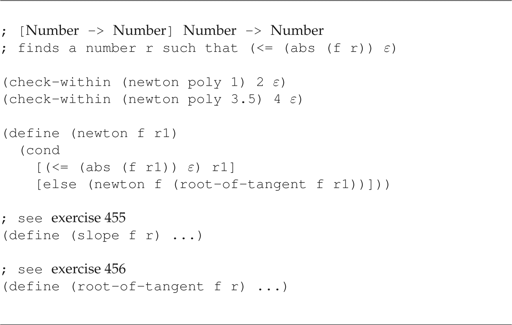
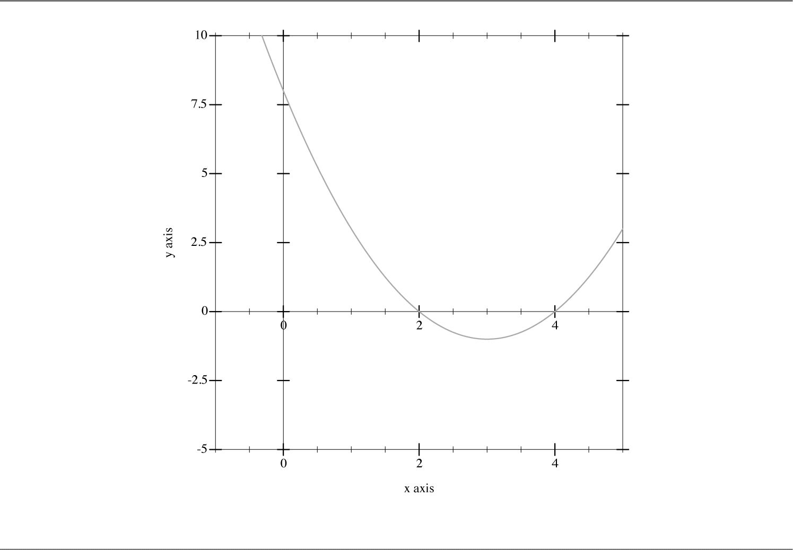

28.1 Newton’s Method
Chapter 27.2 introduces one method for finding the root of a mathematical function. As the exercises in the same section sketch, the method naturally generalizes to computational problems, such as finding certain values in tables, vectors, and arrays. In mathematical applications, programmers tend to employ methods that originate from analytical mathematics. A prominent one is due to Newton. Like binary search, the so-called Newton method repeatedly improves an approximation to the root until it is “close enough.” Starting from a guess, say, r1, the essence of the process is to construct the tangent of f at r1 and to determine its root. While the tangent approximates the function, it is also straightforward to determine its root. By repeating this process sufficiently often, an algorithm can find a root r for which (f r) is close enough to 0.
Newton proved this fact.
Clearly, this process relies on two pieces of domain knowledge about tangents: their slopes and roots. Informally, a tangent of f at some point r1 is the line that goes through the point (r1, f (r1)) and has the same slope as f. One mathematical way to obtain the tangent’s slope is to pick two close points on the x-axis that are equidistant from r1 and to use the slope of the line determined by f at those two points. The convention is to choose a small number ε and to work with r1 + ε and r1 − ε. That is, the points are (r1 − ε, f(r1 − ε)) and (r1 + ε, f(r1 + ε)), which determine a line and a slope:
Exercise 455. Translate this mathematical formula into the ISL+ function slope, which maps function f and a number r1 to the slope of f at r1. Assume that ε is a global constant. For your examples, use functions whose exact slope you can figure out, say, horizontal lines, linear functions, and perhaps polynomials if you know some calculus. 
The second piece of domain knowledge concerns the root of a tangent, which is just a line or a linear function. The tangent goes through (r1, f (r1)) and has the above slope. Mathematically, it is defined as
Finding the root of tangent means finding a value root-of-tangent so that tangent(root-of-tangent) equals 0:
We can solve this equation in a straightforward manner:
Exercise 456. Design root-of-tangent, a function that maps f and r1 to the root of the tangent through (r1,(f r1)).
Now we can use the design recipe to translate the description of Newton’s process into an ISL+ program. The function—let’s call it newton in honor of its inventor—consumes a function f and a number r1:
; [Number -> Number] Number -> Number
; finds a number r such that (f r) is small
; generative repeatedly generates improved guesses
(define (newton f r1) 1.0)
For the template of newton, we turn to the central four questions of the design recipe for generative recursion:
1. If (f r1) is close enough to 0, the problem is solved. Close to 0 could mean (f r1) is a small positive number or a small negative number. Hence we check its absolute value:
(<= (abs (f r1)) 𝜀)
2. The solution is r1.
3. The generative step of the algorithm consists of finding the root of the tangent of f at r1, which generates the next guess. By applying newton to f and this new guess, we resume the process.
4. The answer of the recursion is also the answer of the original problem.
Figure 161 displays newton. It includes two tests that are derived from the tests in chapter 27.2 for find-root. After all, both functions search for the root of a function, and poly has two known roots.

Figure 161: The Newton process
We are not finished with the design of newton. The new, seventh step of the design recipe calls for an investigation into the termination behavior of the function. For newton, the problem shows up with poly:
; Number -> Number
(define (poly x) (* (- x 2) (- x 4)))
As mentioned, its roots are 2 and 4. The graph of poly in figure 162 confirms these roots and also shows that between the two roots the function flattens out. For a mathematically inclined person, this shape raises the question of what newton computes for an initial guess of 3:
> (poly 3)
-1
> (newton poly 3)
/:division by zero

Figure 162: The graph of poly on the interval [-1,5]
The explanation is that slope produces a “bad” value and the root-of-tangent function turns it into an error:
> (slope poly 3)
0
> (root-of-tangent poly 3)
/:division by zero
In addition to this run-time error, newton exhibits two other problems with respect to termination. Fortunately, we can demonstrate both with poly. The first one concerns the nature of numbers, which we briefly touched on in chapter 1.1. It is safe to ignore the distinction between exact and inexact numbers for many beginner exercises in programming, but when it comes to translating mathematics into programs, you need to proceed with extreme caution. Consider the following:
> (newton poly 2.9999)
An ISL+ program treats 2.9999 as an exact number, and the computations in newton process it as such, though because the numbers aren’t integers, the computation uses exact rational fractions. Since the arithmetic for fractions can get much slower than the arithmetic for inexact numbers, the above function call takes a significant amount of time in DrRacket. Depending on your computer, it may take between a few seconds and a minute or more. If you happen to choose other numbers that trigger this form of computation, it may seem as if the call to newton does not terminate at all.
The second problem concerns non-termination. Here is the example:
> (newton poly #i3.0)
It uses the inexact number #i3.0 as the initial guess, which unlike 3 causes a different kind of problem. Specifically, the slope function now produces an inexact 0 for poly while root-of-tangent jumps to infinity:
> (slope poly #i3.0)
#i0.0
> (root-of-tangent poly #i3.0)
#i+inf.0
As a result, the evaluation immediately falls into an infinite loop.
In short, newton exhibits the full range of problems when it comes to complex termination behavior. For some inputs, the function produces a correct result. For some others, it signals errors. And for yet others, it goes into infinite loop or appears to go into one. The header for newton—or some other piece of writing—must warn others who wish to use the function and future readers of these complexities, and good math libraries in common programming languages do so.
The calculation in newton turns #i+inf.0 into +nan.0, a piece of data that says “not a number.” Most arithmetic operations propagate this value, which explains the behavior of newton.
Exercise 457. Design the function double-amount, which computes how many months it takes to double a given amount of money when a savings account pays interest at a fixed rate on a monthly basis.
This exercise was suggested by Adrian German.
Domain Knowledge With a minor algebraic manipulation, you can show that the given amount is irrelevant. Only the interest rate matters. Also domain experts know that doubling occurs after roughly 72/r month as long as the interest rate r is “small.”